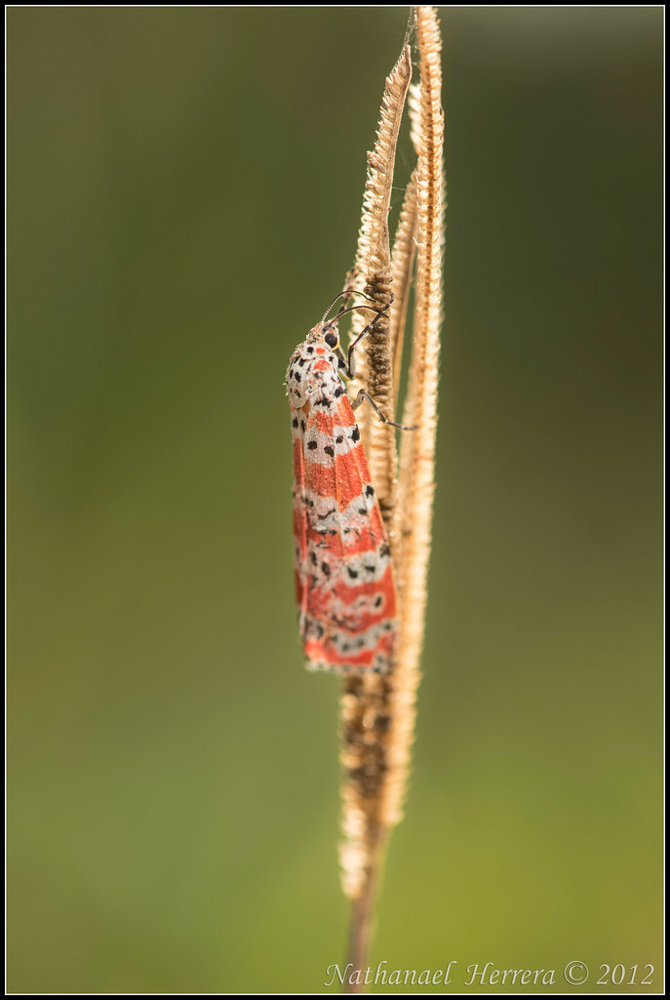

U
Utetheisa
L’Utetheisa pulchella, est un papillon de nuit d'une envergure de 29 à 42 mm environ, de la famille des Arctiinae.
Il a été rencontré en Martinique pour la première fois par Francis Deknuydt en octobre 1999.
Ce papillon vole dans les milieux secs, parfois jusqu’aux zones urbanisées.
Sa chenille l'imago, qui a une activité partiellement diurne, est polyphage.
L’avers de son aile antérieure montre un marbré de taches noires et rouges sur fond blanc.
Ses ailes postérieures, qui restent toujours caché au repos, sont bleu clair avec une large gamme de gris foncé irrégulière.
